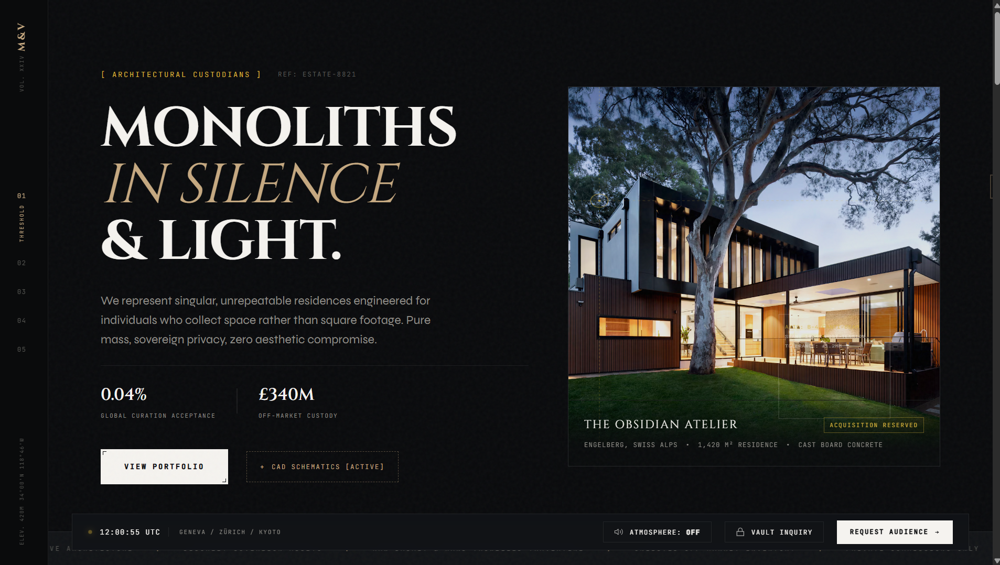
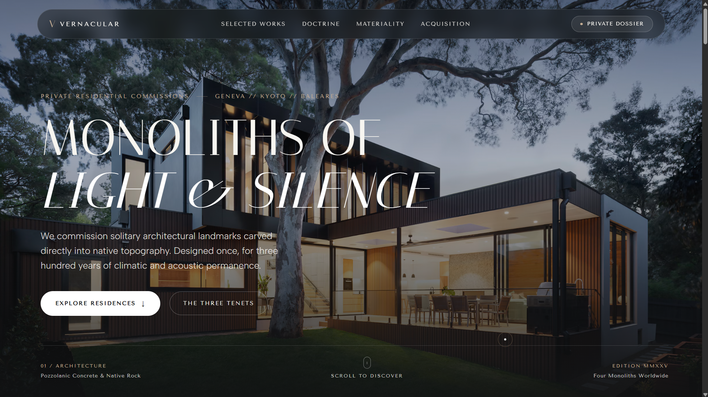

Your AI builds fine websites.
They
all look the same.
Taste Engine is a skill for your coding agent. It studies a real award-winning site, rolls random design constraints, and builds something that doesn’t look like a template.
You’ve seen this site before.
A dark background. A gold accent. A serif headline with a wide sans word next to it. Tiny monospace labels. A fake clock. Three big numbers nobody measured. One stock photo in a box.
It isn’t bad. It’s just the average of the internet. That’s what an AI gives you when nobody tells it what to avoid.
When models choose the most probable next token in CSS, they choose the exact same design clichés. Taste Engine breaks that loop with measured seeds and forced random mutations.
From blank prompt to award-level craft.
A repeatable pipeline that forces original ideas before a single line of CSS is written.
Study.
Your agent opens a randomly picked award-winning site and measures it: real fonts, colors, easing curves,
scroll behavior, interactions. It writes everything into a design.md.
Roll.
Dice decide the background, palette logic, type personality, layout skeleton, a motion signature and one hard constraint. No "I like this one" allowed.
Build.
Your idea gets a concept first, then a clean-room build from the design system. Gates check that it's original and not generic before it ships.
What you get in every run.
your-project/design/
| Artifact | Description | Craft Purpose |
|---|---|---|
A working site |
Clean HTML, CSS, JS previewed in the real browser at desktop (1440px) and mobile (390px). | Production ready, accessible, zero slop fingerprints. |
design/design.md |
The seed site’s full design document: colors, type table, layout hierarchy, and complete motion catalog. | Concrete measured data (easings, hexes, staggers) instead of memory guesses. |
design/tokens.md |
Your own project design system with CSS custom properties, fonts, surfaces, and motion tokens. | Clean-room consistency across all pages and components. |
design/direction.md |
The Direction Card, concept statement, dice results, and what was inherited vs mutated. | Explicit proof of originality and divergence from the seed. |
design/critique.md |
Gate results (Similarity gate, Slop scan, Reference parity) and score out of 40. | Hostile art director audit before shipping. |
Same prompt. Two runs.
See the difference when an agent stops guessing and starts measuring.


"Landing page for an ultra-luxury monolithic architectural studio."
Why it’s different.
It measures, it doesn’t guess.
Fonts, colors, easing curves and scroll animations come directly from the page itself using live console queries.
It uses randomness on purpose.
Two runs on similar briefs don’t converge into the same layout. Forced mutation dice prevent creative collapse.
It makes you pick an idea first.
The first two ideas are burned immediately as predictable slop. Concept and metaphor precede visual styling.
It checks itself.
A strict similarity gate, a slop fingerprint penalty scan, and a side-by-side comparison with real award winners.
✕ What it won’t do (Honest limits)
- It won’t clone a site. Concept, copy, media and structure are always new, and a similarity gate enforces it.
- It won’t replace a designer’s judgment. Treat the output as an opinionated, high-craft first draft.
- It can’t fully recreate custom proprietary WebGL or paid fonts from a seed. It will state what it couldn’t measure.
- Runs take a while, because it actually browses and measures a real site.
- It works best when your agent has a browser tool and a terminal.
Who it’s for.
Developers & Vibe Coders
You ship quickly with AI agents and want your products to stop looking like cookie-cutter starter templates.
Digital Product Designers
You want a fast, opinionated first draft that explores bold typographic and interaction angles to react to.
Startup Founders
You need a launch page that stands out instantly in the feed and doesn't look like every other SaaS launch.
Frequently asked questions.
SKILL.md. You can easily edit
options, add new reference worlds, or enforce your team's specific brand rules.
design/dice.md and automatically moves to the next position.
Make your next site not look like an AI made it.
One single SKILL.md file. No telemetry, no accounts, zero lock-in.